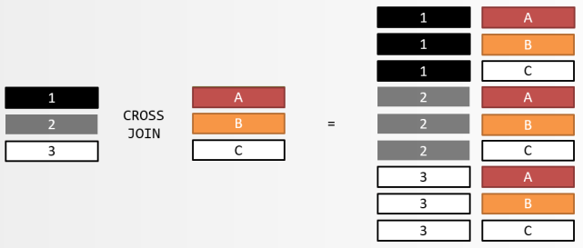
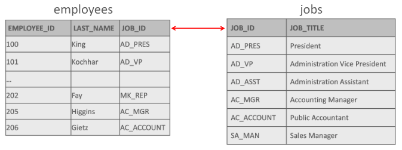
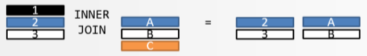
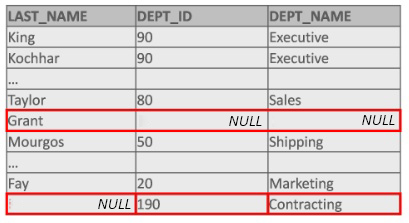
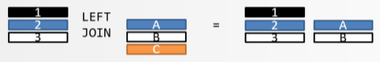
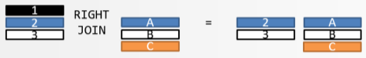
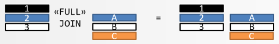
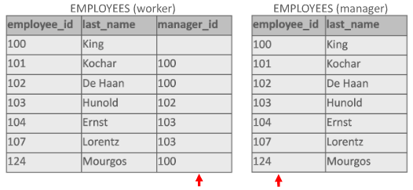

Joins#
%LOAD data/example.db
Tot nu toe hebben we vrijwel alleen nog maar informatie gehaald uit één tabel, maar heel vaak zul je informatie op willen halen die uit verschillende tabellen komt. Stel bijvoorbeeld dat je alle achternamen wil tonen met hun department_id en de department_name. De last_name staat in de tabel employees, department_name staat in departments en het department_id staat zowel in employees als in departments. Probeer onderstaande query en je zult zien dat je een foutmelding krijgt!
SELECT last_name, department_id, department_name
FROM employees, departments;
Error: ambiguous column name: department_id
Het systeem meldt dat de kolom department_id ambigu (tweeslachtig) is. Dat komt omdat department_id zowel in employees staat als in departments en het systeem weet niet welke kolom je bedoelt. Door het gebruik van een alias voor de tabellen employees en departments kun je aangeven uit welke tabel department_id genomen moet worden. We passen nu de query aan door een alias toe te voegen aan de beide tabellen. De tabel employees noemen we tijdelijk ‘e’ en de tabel departments noemen we tijdelijk ‘d’. De query zal het nu wel doen, maar we hebben een ander probleem!
SELECT e.last_name, d.department_id, d.department_name
FROM employees e, departments d
LIMIT 20;
| last_name | department_id | department_name |
|---|---|---|
| King | 10 | Administration |
| King | 20 | Marketing |
| King | 50 | Shipping |
| King | 60 | IT |
| King | 80 | Sales |
| King | 90 | Executive |
| King | 110 | Accounting |
| King | 190 | Contracting |
| Kochhar | 10 | Administration |
| Kochhar | 20 | Marketing |
| Kochhar | 50 | Shipping |
| Kochhar | 60 | IT |
| Kochhar | 80 | Sales |
| Kochhar | 90 | Executive |
| Kochhar | 110 | Accounting |
| Kochhar | 190 | Contracting |
| De Haan | 10 | Administration |
| De Haan | 20 | Marketing |
| De Haan | 50 | Shipping |
| De Haan | 60 | IT |
Er verschijnen 160 rijen en je ziet dat alle employees allemaal op alle departments werken. Er zijn 20 employees en 8 departments en je krijgt dus 20 x 8 = 160 rijen terug. In onderstaande afbeelding worden enkel King en Kochar getoond. In zo’n geval spreekt men van een Cartesisch product.
Je begrijpt dat dit niet de bedoeling is. King en Kochar werken alleen maar op de afdeling Executive. Om de juiste gegevens te krijgen moet je iets heel belangrijks doen en dat is dat je een join voorwaarde inbouwt. Dat kan bijvoorbeeld op de volgende manier met een WHERE component.
SELECT e.last_name, d.department_id, d.department_name
FROM employees e, departments d
WHERE e.department_id = d.department_id;
| last_name | department_id | department_name |
|---|---|---|
| King | 90 | Executive |
| Kochhar | 90 | Executive |
| De Haan | 90 | Executive |
| Hunold | 60 | IT |
| Ernst | 60 | IT |
| Lorentz | 60 | IT |
| Mourgos | 50 | Shipping |
| Rajs | 50 | Shipping |
| Davies | 50 | Shipping |
| Matos | 50 | Shipping |
| Vargas | 50 | Shipping |
| Zlotkey | 80 | Sales |
| Abel | 80 | Sales |
| Taylor | 80 | Sales |
| Whalen | 10 | Administration |
| Hartstein | 20 | Marketing |
| Fay | 20 | Marketing |
| Higgins | 110 | Accounting |
| Gietz | 110 | Accounting |
Nu krijg je de juiste informatie met 19 rijen. Geen 20 want Grant werkt niet op een afdeling.
We noemen dit een equijoin. Equi (gelijk) slaat op het is-gelijk-teken. Er is een aantal mogelijkheden om de juiste informatie uit verschillende tabellen te halen. Hierna komen ze allemaal aan bod zodat je ze herkent.
In de praktijk wordt echter vooral de LEFT JOIN ON gebruikt en daar moeten we de grootste aandacht naar uit laten gaan.
Cross join#
Een CROSS JOIN voegt elke rij van een tabel samen met elke andere rij in een andere tabel. Als je een tabel hebt met twintig rijen (employees bijvoorbeeld) die je samenvoegt met een tabel van acht rijen (departments bijvoorbeeld), dan krijg je 160 rijen als resultaat. Elke werknemer (employee) wordt aan elke afdeling (department) gekoppeld. In zo’n geval spreekt men van een Cartesisch product, zoals al eerder besproken.

SELECT last_name, department_name
FROM employees CROSS JOIN departments
LIMIT 20;
| last_name | department_name |
|---|---|
| King | Administration |
| King | Marketing |
| King | Shipping |
| King | IT |
| King | Sales |
| King | Executive |
| King | Accounting |
| King | Contracting |
| Kochhar | Administration |
| Kochhar | Marketing |
| Kochhar | Shipping |
| Kochhar | IT |
| Kochhar | Sales |
| Kochhar | Executive |
| Kochhar | Accounting |
| Kochhar | Contracting |
| De Haan | Administration |
| De Haan | Marketing |
| De Haan | Shipping |
| De Haan | IT |
Je begrijpt dat dit niet de bedoeling kan zijn. CROSS kan overigens gewoon worden weggelaten voor hetzelfde effect.
SELECT last_name, department_name
FROM employees JOIN departments
LIMIT 20;
| last_name | department_name |
|---|---|
| King | Administration |
| King | Marketing |
| King | Shipping |
| King | IT |
| King | Sales |
| King | Executive |
| King | Accounting |
| King | Contracting |
| Kochhar | Administration |
| Kochhar | Marketing |
| Kochhar | Shipping |
| Kochhar | IT |
| Kochhar | Sales |
| Kochhar | Executive |
| Kochhar | Accounting |
| Kochhar | Contracting |
| De Haan | Administration |
| De Haan | Marketing |
| De Haan | Shipping |
| De Haan | IT |
De CROSS JOIN wordt in de praktijk zelden gebruikt, maar je kunt bijvoorbeeld testen of kolomnamen en tabelnamen kloppen in een query en daarna pas de query verfijnen.
Natural join#
Uit twee tabellen wordt één resultaattabel afgeleid, waarvan de rijen bestaan uit alle mogelijke combinaties van een rij uit de ene met een rij uit de andere tabel, mits beide rijen voor alle gelijknamige kolomnamen dezelfde waarden hebben en ze moeten van hetzelfde datatype zijn. Als de kolommen dezelfde naam hebben maar van een verschillend datatype zijn, krijg je een foutmelding. Een combinatie van twee rijen ontstaat door ze aan elkaar te plakken en de dubbele waarden slechts eenmaal in het resultaat op te nemen. Het DBMS leidt de voorwaarde van de join dus zelf af door te kijken naar de namen van de kolommen in de beide tabellen.
De tabel employees heeft een kolom job_id. Dit job_id verwijst naar de kolom met dezelfde naam in de tabel jobs. Ze zijn beide van het type VARCHAR(10). Dus job_id staat zowel in de tabel employees als in de tabel jobs. Maar job_title staat alleen maar in de tabel jobs.

Als je nu een overzicht wil maken van personeelsleden met daarin ook hun job_title dan gebruik je de volgende query:
SELECT first_name, last_name, job_id, job_title
FROM employees NATURAL JOIN jobs;
| first_name | last_name | job_id | job_title |
|---|---|---|---|
| Steven | King | AD_PRES | President |
| Neena | Kochhar | AD_VP | Administration Vice President |
| Lex | De Haan | AD_VP | Administration Vice President |
| Alexander | Hunold | IT_PROG | Programmer |
| Bruce | Ernst | IT_PROG | Programmer |
| Diana | Lorentz | IT_PROG | Programmer |
| Kevin | Mourgos | ST_MAN | Stock Manager |
| Trenna | Rajs | ST_CLERK | Stock Clerk |
| Curtis | Davies | ST_CLERK | Stock Clerk |
| Randall | Matos | ST_CLERK | Stock Clerk |
| Peter | Vargas | ST_CLERK | Stock Clerk |
| Eleni | Zlotkey | SA_MAN | Sales Manager |
| Ellen | Abel | SA_REP | Sales Representative |
| Jonathon | Taylor | SA_REP | Sales Representative |
| Kimberely | Grant | SA_REP | Sales Representative |
| Jennifer | Whalen | AD_ASST | Administration Assistant |
| Michael | Hartstein | MK_MAN | Marketing Manager |
| Pat | Fay | MK_REP | Marketing Representative |
| Shelley | Higgins | AC_MGR | Accounting Manager |
| William | Gietz | AC_ACCOUNT | Public Accountant |
Nog een voorbeeld. Je wil alle department_names tonen met de city. De department_names staan in de tabel departments en city staat in de tabel locations. In beide tabellen staat een kolom location_id van het type SMALLINT(6).
SELECT department_name, city
FROM departments NATURAL JOIN locations;
| department_name | city |
|---|---|
| Administration | Seattle |
| Marketing | Toronto |
| Shipping | South San Francisco |
| IT | Southlake |
| Sales | Oxford |
| Executive | Seattle |
| Accounting | Seattle |
| Contracting | Seattle |
Het is mogelijk WHERE te gebruiken met een natural join.
SELECT first_name, last_name, job_id, job_title
FROM employees NATURAL JOIN jobs
WHERE last_name = 'King';
| first_name | last_name | job_id | job_title |
|---|---|---|---|
| Steven | King | AD_PRES | President |
Waarschuwing
Het gebruik van de NATURAL JOIN wordt sterk afgeraden aangezien je de kans loopt onbetrouwbare informatie op te halen op deze manier. In de praktijk wordt de NATURAL JOIN dan ook zelden of niet gebruikt. De enige reden dat deze hier genoemd wordt, is dat je moet weten dat hij bestaat, maar gebruik hem dus niet!
Neem bijvoorbeeld onderstaande query.
SELECT first_name, last_name, job_id, department_name
FROM employees NATURAL JOIN departments;
| first_name | last_name | job_id | department_name |
|---|---|---|---|
| Neena | Kochhar | AD_VP | Executive |
| Lex | De Haan | AD_VP | Executive |
| Bruce | Ernst | IT_PROG | IT |
| Diana | Lorentz | IT_PROG | IT |
| Trenna | Rajs | ST_CLERK | Shipping |
| Curtis | Davies | ST_CLERK | Shipping |
| Randall | Matos | ST_CLERK | Shipping |
| Peter | Vargas | ST_CLERK | Shipping |
| Ellen | Abel | SA_REP | Sales |
| Jonathon | Taylor | SA_REP | Sales |
| Pat | Fay | MK_REP | Marketing |
| William | Gietz | AC_ACCOUNT | Accounting |
Er zitten twintig employees in de tabel employees en met deze NATURAL JOIN van de tabellen employees en departments komen er maar twaalf rijen terug!
Inner join#
Met een INNER JOIN worden de rijen getoond die in twee of meerdere tabellen voorkomen. In plaats van INNER JOIN kun je gewoon JOIN gebruiken. Een JOIN maak je met USING of met JOIN ON. Een INNER JOIN wordt ook wel een SIMPLE JOIN genoemd. De eerste tabel heeft zwart, blauw en wit. De tweede tabel heeft blauw, wit en oranje. Alleen blauw en wit komen voor in beide tabellen en die worden dan getoond. Zwart en oranje worden niet getoond.

{kind=link}
Fig. 1 INNER JOIN#
SELECT last_name, department_name
FROM employees INNER JOIN departments USING(department_id);
| last_name | department_name |
|---|---|
| King | Executive |
| Kochhar | Executive |
| De Haan | Executive |
| Hunold | IT |
| Ernst | IT |
| Lorentz | IT |
| Mourgos | Shipping |
| Rajs | Shipping |
| Davies | Shipping |
| Matos | Shipping |
| Vargas | Shipping |
| Zlotkey | Sales |
| Abel | Sales |
| Taylor | Sales |
| Whalen | Administration |
| Hartstein | Marketing |
| Fay | Marketing |
| Higgins | Accounting |
| Gietz | Accounting |
SELECT last_name, department_name
FROM employees JOIN departments USING(department_id);
| last_name | department_name |
|---|---|
| King | Executive |
| Kochhar | Executive |
| De Haan | Executive |
| Hunold | IT |
| Ernst | IT |
| Lorentz | IT |
| Mourgos | Shipping |
| Rajs | Shipping |
| Davies | Shipping |
| Matos | Shipping |
| Vargas | Shipping |
| Zlotkey | Sales |
| Abel | Sales |
| Taylor | Sales |
| Whalen | Administration |
| Hartstein | Marketing |
| Fay | Marketing |
| Higgins | Accounting |
| Gietz | Accounting |
Grant heeft geen department_id en komt daarom niet voor in de uitvoer.
Join using#
Met USING geef je specifiek aan welke kolommen gebruikt moeten worden voor de JOIN.
SELECT first_name, last_name, department_id, department_name FROM employees JOIN departments USING(department_id);
Het is mogelijk drie of meer tabellen te gebruiken om alle informatie in één uitvoer te zetten. Als je drie tabellen nodig hebt voor de juiste informatie, noem je de eerste tabel bij FROM en volgen er daarna twee JOINS.
SELECT last_name, department_name, city
FROM employees
JOIN departments USING(department_id)
JOIN locations USING(location_id);
| last_name | department_name | city |
|---|---|---|
| King | Executive | Seattle |
| Kochhar | Executive | Seattle |
| De Haan | Executive | Seattle |
| Hunold | IT | Southlake |
| Ernst | IT | Southlake |
| Lorentz | IT | Southlake |
| Mourgos | Shipping | South San Francisco |
| Rajs | Shipping | South San Francisco |
| Davies | Shipping | South San Francisco |
| Matos | Shipping | South San Francisco |
| Vargas | Shipping | South San Francisco |
| Zlotkey | Sales | Oxford |
| Abel | Sales | Oxford |
| Taylor | Sales | Oxford |
| Whalen | Administration | Seattle |
| Hartstein | Marketing | Toronto |
| Fay | Marketing | Toronto |
| Higgins | Accounting | Seattle |
| Gietz | Accounting | Seattle |
Join on#
JOIN ON is de allerbelangrijkste manier om tabellen aan elkaar te knopen en daarom moet er heel veel geoefend worden met JOIN ON! JOIN ON werkt hetzelfde als JOIN USING maar JOIN ON kun je ook gebruiken als de kolomnamen van de twee verschillende tabellen niet exact hetzelfde zijn. Na ON benoem je dan de kolomnamen die aan elkaar gelijk moeten zijn. Eerst noem je de tabel, dan volgt er een punt en dan volgt de kolomnaam. Er zijn twee kolomnamen die je met elkaar wil vergelijken, maar ze heten anders. In de tabel employees heet de kolom salary en in de tabel job_grades heet de kolom lowest_sal. In onderstaand voorbeeld vergelijk je salary van employees met lowest_sal van job_grades. Deze personen zitten dus in de laagste salarisschaal van job_grade.
SELECT first_name, last_name, salary, lowest_sal, highest_sal, grade_level
FROM employees JOIN job_grades ON employees.salary = job_grades.lowest_sal;
| first_name | last_name | salary | lowest_sal | highest_sal | grade_level |
|---|---|---|---|---|---|
| Bruce | Ernst | 6000 | 6000 | 9999 | C |
| Pat | Fay | 6000 | 6000 | 9999 | C |
Met aliassen maak je deze query als volgt wat netter.
SELECT e.first_name
, e.last_name
, e.salary
, g.lowest_sal
, g.highest_sal
, g.grade_level
FROM employees e JOIN job_grades g ON e.salary = g.lowest_sal;
| first_name | last_name | salary | lowest_sal | highest_sal | grade_level |
|---|---|---|---|---|---|
| Bruce | Ernst | 6000 | 6000 | 9999 | C |
| Pat | Fay | 6000 | 6000 | 9999 | C |
Nog een voorbeeld van employees die het minimum salaris hebben van de job_id die ze hebben. De tabellen employees en jobs worden samengevoegd op kolommen die niet dezelfde kolomnaam hebben. Merk op dat salary twee decimalen heeft en dat min_salary en max_salary geen decimalen hebben. De kolom salary is van het type DECIMAL en de kolommen min_salary en max_salary zijn van het type INT.
SELECT e.first_name, e.last_name, e.salary, j.min_salary, j.max_salary
FROM employees e JOIN jobs j ON e.salary = j.min_salary;
| first_name | last_name | salary | min_salary | max_salary |
|---|---|---|---|---|
| Alexander | Hunold | 9000 | 9000 | 15000 |
| Bruce | Ernst | 6000 | 6000 | 12000 |
| Diana | Lorentz | 4200 | 4200 | 9000 |
| Pat | Fay | 6000 | 6000 | 12000 |
JOIN ON werkt uiteraard ook als de kolomnamen van de verschillende tabellen wel hetzelfde zijn.
SELECT last_name, job_title
FROM employees JOIN jobs ON employees.job_id = jobs.job_id;
| last_name | job_title |
|---|---|
| King | President |
| Kochhar | Administration Vice President |
| De Haan | Administration Vice President |
| Hunold | Programmer |
| Ernst | Programmer |
| Lorentz | Programmer |
| Mourgos | Stock Manager |
| Rajs | Stock Clerk |
| Davies | Stock Clerk |
| Matos | Stock Clerk |
| Vargas | Stock Clerk |
| Zlotkey | Sales Manager |
| Abel | Sales Representative |
| Taylor | Sales Representative |
| Grant | Sales Representative |
| Whalen | Administration Assistant |
| Hartstein | Marketing Manager |
| Fay | Marketing Representative |
| Higgins | Accounting Manager |
| Gietz | Public Accountant |
Het is mogelijk drie of meer tabellen te gebruiken om alle informatie in één uitvoer te zetten. Voor de leesbaarheid kun je dan de joins onder elkaar zetten.
SELECT last_name, department_name, city
FROM employees
JOIN departments ON (employees.department_id = departments.department_id)
JOIN locations ON departments.location_id = locations.location_id;
| last_name | department_name | city |
|---|---|---|
| King | Executive | Seattle |
| Kochhar | Executive | Seattle |
| De Haan | Executive | Seattle |
| Hunold | IT | Southlake |
| Ernst | IT | Southlake |
| Lorentz | IT | Southlake |
| Mourgos | Shipping | South San Francisco |
| Rajs | Shipping | South San Francisco |
| Davies | Shipping | South San Francisco |
| Matos | Shipping | South San Francisco |
| Vargas | Shipping | South San Francisco |
| Zlotkey | Sales | Oxford |
| Abel | Sales | Oxford |
| Taylor | Sales | Oxford |
| Whalen | Administration | Seattle |
| Hartstein | Marketing | Toronto |
| Fay | Marketing | Toronto |
| Higgins | Accounting | Seattle |
| Gietz | Accounting | Seattle |
Outer join#
Als je rijen uit meerdere tabellen ophaalt, kan het zijn dat sommige rijen uit de ene tabel niet gekoppeld (ge-joined) kunnen worden (door de join-voorwaarde) met een rij uit de andere tabel. Zo’n rij komt dan niet in je query resultaat. Soms wil je die rijen uit die ene tabel toch in je resultaat. Door gebruik te maken van een outer-join zal het DBMS deze rijen dan toch in je resultaat behouden, waarbij ze ge-joined worden met een (denkbeeldige) geheel lege rij (allemaal NULL’s) uit de andere tabel. In het voorbeeld van onze database heeft werknemer Grant bijvoorbeeld geen department_id (ze werkt dus niet op een bepaalde afdeling) en er is een department waar niemand werkt (Contracting).

Fig. 2 Tabel met NULL waarden.#
Als we de tabellen employees en departments samenvoegen met een INNER JOIN krijgen we een uitvoer van 19 records terwijl er 20 werknemers zijn. Grant staat hier namelijk niet bij.
SELECT first_name, last_name, department_id, department_name
FROM employees JOIN departments USING(department_id);
| first_name | last_name | department_id | department_name |
|---|---|---|---|
| Steven | King | 90 | Executive |
| Neena | Kochhar | 90 | Executive |
| Lex | De Haan | 90 | Executive |
| Alexander | Hunold | 60 | IT |
| Bruce | Ernst | 60 | IT |
| Diana | Lorentz | 60 | IT |
| Kevin | Mourgos | 50 | Shipping |
| Trenna | Rajs | 50 | Shipping |
| Curtis | Davies | 50 | Shipping |
| Randall | Matos | 50 | Shipping |
| Peter | Vargas | 50 | Shipping |
| Eleni | Zlotkey | 80 | Sales |
| Ellen | Abel | 80 | Sales |
| Jonathon | Taylor | 80 | Sales |
| Jennifer | Whalen | 10 | Administration |
| Michael | Hartstein | 20 | Marketing |
| Pat | Fay | 20 | Marketing |
| Shelley | Higgins | 110 | Accounting |
| William | Gietz | 110 | Accounting |
Dit soort problemen kunnen we oplossen met LEFT JOIN en RIGHT JOIN.
Left join#
Bij een LEFT JOIN worden rijen uit de linker tabel in het query resultaat behouden als ze niet met een rij uit de rechter tabel gejoined kunnen worden. In plaats van LEFT JOIN wordt ook wel LEFT OUTER JOIN gebruikt. In de eerste tabel komen zwart, blauw en wit voor en in de tweede tabel blauw, wit en oranje. Met een LEFT JOIN worden alle rijen getoond van de linker tabel, dus in dit geval zwart, blauw en wit. Maar van de rechter tabel wordt alleen maar blauw en wit getoond en oranje niet.

SELECT last_name, department_name
FROM employees
LEFT JOIN departments ON employees.department_id = departments.department_id;
| last_name | department_name |
|---|---|
| King | Executive |
| Kochhar | Executive |
| De Haan | Executive |
| Hunold | IT |
| Ernst | IT |
| Lorentz | IT |
| Mourgos | Shipping |
| Rajs | Shipping |
| Davies | Shipping |
| Matos | Shipping |
| Vargas | Shipping |
| Zlotkey | Sales |
| Abel | Sales |
| Taylor | Sales |
| Grant | |
| Whalen | Administration |
| Hartstein | Marketing |
| Fay | Marketing |
| Higgins | Accounting |
| Gietz | Accounting |
Je ziet dat Grant nu wel in het linker rijtje voorkomt, ondanks het feit dat ze geen department_name heeft. En dat komt dus door de toevoeging van LEFT bij de JOIN. Bij een LEFT JOIN is het linkerrijtje het langst.
Right join#
Bij een RIGHT JOIN worden rijen uit de rechter tabel in het query resultaat behouden als ze niet met een rij uit de linker tabel gejoined kunnen worden. In plaats van RIGHT JOIN wordt ook wel RIGHT OUTER JOIN gebruikt. IN de linker tabel komen zwart, blauw en wit voor en in de rechter tabel blauw, wit en oranje. Zwart wordt dus niet getoond, want die staat alleen maar aan de linkerkant. Oranje wordt wel getoond.

SELECT last_name, department_name
FROM employees
RIGHT JOIN departments ON employees.department_id = departments.department_id;
| last_name | department_name |
|---|---|
| King | Executive |
| Kochhar | Executive |
| De Haan | Executive |
| Hunold | IT |
| Ernst | IT |
| Lorentz | IT |
| Mourgos | Shipping |
| Rajs | Shipping |
| Davies | Shipping |
| Matos | Shipping |
| Vargas | Shipping |
| Zlotkey | Sales |
| Abel | Sales |
| Taylor | Sales |
| Whalen | Administration |
| Hartstein | Marketing |
| Fay | Marketing |
| Higgins | Accounting |
| Gietz | Accounting |
| Contracting |
Je ziet dat Contracting nu wel in het rechterrijtje voorkomt, ondanks het feit dat er niemand op die afdeling werkt. En dat komt dus door de toevoeging van RIGHT bij de JOIN. Bij een RIGHT JOIN is het rechterrijtje het langst.
Waarschuwing
In de praktijk worden RIGHT JOINS niet gebruikt. Het is niet erg nuttig een overzicht te laten beginnen met een kolom met NULL. Bovendien kun je een OUTER JOIN namaken met een LEFT JOIN door de kolomnamen om te draaien.
SELECT department_name, last_name
FROM departments
LEFT JOIN employees ON departments.department_id = employees.department_id;
| department_name | last_name |
|---|---|
| Administration | Whalen |
| Marketing | Fay |
| Marketing | Hartstein |
| Shipping | Davies |
| Shipping | Matos |
| Shipping | Mourgos |
| Shipping | Rajs |
| Shipping | Vargas |
| IT | Ernst |
| IT | Hunold |
| IT | Lorentz |
| Sales | Abel |
| Sales | Taylor |
| Sales | Zlotkey |
| Executive | De Haan |
| Executive | King |
| Executive | Kochhar |
| Accounting | Gietz |
| Accounting | Higgins |
| Contracting |
Full join#
Je kunt een LEFT JOIN en een RIGHT JOIN combineren tot een FULL JOIN. Je krijgt dan alle rijen van een kolom uit de ene tabel gecombineerd met alle rijen van een kolom uit een andere tabel, ongeacht of er een match is of niet. In plaats van FULL JOIN wordt ook wel FULL OUTER JOIN gebruikt.

SELECT employees.last_name, departments.department_id, departments.department_name
FROM employees
FULL OUTER JOIN departments ON employees.department_id = departments.department_id;
| last_name | department_id | department_name |
|---|---|---|
| King | 90 | Executive |
| Kochhar | 90 | Executive |
| De Haan | 90 | Executive |
| Hunold | 60 | IT |
| Ernst | 60 | IT |
| Lorentz | 60 | IT |
| Mourgos | 50 | Shipping |
| Rajs | 50 | Shipping |
| Davies | 50 | Shipping |
| Matos | 50 | Shipping |
| Vargas | 50 | Shipping |
| Zlotkey | 80 | Sales |
| Abel | 80 | Sales |
| Taylor | 80 | Sales |
| Grant | ||
| Whalen | 10 | Administration |
| Hartstein | 20 | Marketing |
| Fay | 20 | Marketing |
| Higgins | 110 | Accounting |
| Gietz | 110 | Accounting |
| 190 | Contracting |
De FULL OUTER JOIN is ANSI-standaard maar wordt niet ondersteund in MySQL.
Self join#
Het is mogelijk een tabel met zichzelf te joinen door twee aliassen te gebruiken voor dezelfde tabel. De database denkt dan dat er twee tabellen zijn. In de tabel employees staat bij manager_id wie de manager is van de employee. Dat nummer bij manager_id verwijst naar het employee_id.
Je ziet dat King geen manager_id heeft, hij is de hoogste baas.
Kochar heeft als manager_id 100 en dat is dus King.
Hunold heeft als manager_id 102 en dat is dus De Haan.
et cetera

Als je een alias gaat kiezen, moet je een duidelijke naam nemen. In dit geval hebben we worker voor de werknemers gekozen en manager voor de managers. We kunnen nu een overzicht maken met de werknemers en hun managers.
SELECT worker.last_name, worker.manager_id, manager.last_name AS manager_name
FROM employees worker
JOIN employees manager ON worker.manager_id = manager.employee_id;
| last_name | manager_id | manager_name |
|---|---|---|
| Kochhar | 100 | King |
| De Haan | 100 | King |
| Hunold | 102 | De Haan |
| Ernst | 103 | Hunold |
| Lorentz | 103 | Hunold |
| Mourgos | 100 | King |
| Rajs | 124 | Mourgos |
| Davies | 124 | Mourgos |
| Matos | 124 | Mourgos |
| Vargas | 124 | Mourgos |
| Zlotkey | 100 | King |
| Abel | 149 | Zlotkey |
| Taylor | 149 | Zlotkey |
| Grant | 149 | Zlotkey |
| Whalen | 101 | Kochhar |
| Hartstein | 100 | King |
| Fay | 201 | Hartstein |
| Higgins | 101 | Kochhar |
| Gietz | 205 | Higgins |
En als je daar KING bij wil hebben, maak je er een LEFT JOIN van.
SELECT worker.last_name, worker.manager_id, manager.last_name AS manager_name
FROM employees worker
LEFT JOIN employees manager ON worker.manager_id = manager.employee_id;
| last_name | manager_id | manager_name |
|---|---|---|
| King | ||
| Kochhar | 100 | King |
| De Haan | 100 | King |
| Hunold | 102 | De Haan |
| Ernst | 103 | Hunold |
| Lorentz | 103 | Hunold |
| Mourgos | 100 | King |
| Rajs | 124 | Mourgos |
| Davies | 124 | Mourgos |
| Matos | 124 | Mourgos |
| Vargas | 124 | Mourgos |
| Zlotkey | 100 | King |
| Abel | 149 | Zlotkey |
| Taylor | 149 | Zlotkey |
| Grant | 149 | Zlotkey |
| Whalen | 101 | Kochhar |
| Hartstein | 100 | King |
| Fay | 201 | Hartstein |
| Higgins | 101 | Kochhar |
| Gietz | 205 | Higgins |
Opmerking
De SELF JOIN komt sporadisch voor en is dus niet erg belangrijk. In de database die wij gebruiken is er slechts één SELF-JOIN te maken en die staat hierboven uitgelegd.
Equi join#
Een EQUIJOIN is een term voor een categorie join waarbij het is-gelijk-teken gebruikt wordt om twee of meerdere tabellen aan elkaar te knopen. Joins die hiertoe behoren zijn bijvoorbeeld de NATURAL JOIN, JOIN USING en JOIN ON met het = teken. Het is ook mogelijk twee tabellen samen te voegen met een vergelijking in de WHERE. Deze joins horen niet tot de ANSI-standaard maar ze worden ondersteund in elk Database Management System.
Voorbeeld van een EQUI JOIN met de vergelijking in de WHERE. Alle tabellen die je gebruikt komen op de WHERE regel.
SELECT employees.last_name, departments.department_name
FROM employees, departments
WHERE employees.department_id = departments.department_id;
| last_name | department_name |
|---|---|
| King | Executive |
| Kochhar | Executive |
| De Haan | Executive |
| Hunold | IT |
| Ernst | IT |
| Lorentz | IT |
| Mourgos | Shipping |
| Rajs | Shipping |
| Davies | Shipping |
| Matos | Shipping |
| Vargas | Shipping |
| Zlotkey | Sales |
| Abel | Sales |
| Taylor | Sales |
| Whalen | Administration |
| Hartstein | Marketing |
| Fay | Marketing |
| Higgins | Accounting |
| Gietz | Accounting |
Voorbeelden van een EQUI JOIN met de vergelijking in de JOIN ON. De uitvoer is in beide gevallen exact hetzelfde.
SELECT employees.last_name, departments.department_name
FROM employees
JOIN departments ON employees.department_id = departments.department_id;
| last_name | department_name |
|---|---|
| King | Executive |
| Kochhar | Executive |
| De Haan | Executive |
| Hunold | IT |
| Ernst | IT |
| Lorentz | IT |
| Mourgos | Shipping |
| Rajs | Shipping |
| Davies | Shipping |
| Matos | Shipping |
| Vargas | Shipping |
| Zlotkey | Sales |
| Abel | Sales |
| Taylor | Sales |
| Whalen | Administration |
| Hartstein | Marketing |
| Fay | Marketing |
| Higgins | Accounting |
| Gietz | Accounting |
Tip
Maar met een vergelijking in de WHERE kun je dus geen rijen tonen waarvan een van de kolommen NULL is. Met een LEFT JOIN ON kan dat wel en daarom is het verstandig jezelf aan te leren dat je altijd LEFT JOIN ON gebruikt.
Gebruik onderstaande query in plaats van de query met de vergelijking in de WHERE hierboven. Grant heeft geen department_name maar hij komt toch op het overzicht.
SELECT last_name, department_name
FROM employees
LEFT JOIN departments ON employees.department_id = departments.department_id;
| last_name | department_name |
|---|---|
| King | Executive |
| Kochhar | Executive |
| De Haan | Executive |
| Hunold | IT |
| Ernst | IT |
| Lorentz | IT |
| Mourgos | Shipping |
| Rajs | Shipping |
| Davies | Shipping |
| Matos | Shipping |
| Vargas | Shipping |
| Zlotkey | Sales |
| Abel | Sales |
| Taylor | Sales |
| Grant | |
| Whalen | Administration |
| Hartstein | Marketing |
| Fay | Marketing |
| Higgins | Accounting |
| Gietz | Accounting |